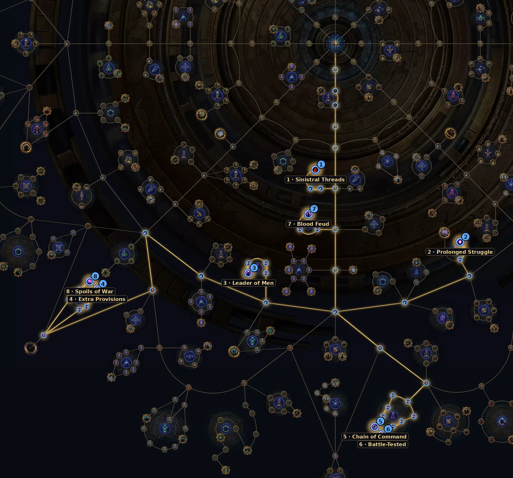

Um exército congelado no tempo. Você quebra os monstros e os baús antes do tempo acabar. Na 3.30 é a mecânica mais fácil para começar: muitos raros de uma vez, e eles soltam a currency boa.
| Item | Como usar |
|---|---|
| Threads | Legion Threads: 1–3 no começo, 4–8 no endgame. Mais Threads aumentam a chance de efeitos especiais da Legion. |
| Altares Eldritch | Altares do Eater of Worlds podem fazer os monstros e o boss soltarem Legion Threads. |
| Atlas Drops | Aumenta os splinters de Legion e a quantidade de Threads. Prefira mapas com Atlas Drops alto. |
| Região | Complete o objetivo da Região Moldada de Legion: +1 Thread grátis nos outros mapas dela. |
Árvore oficial da 3.30 (a GGG publicou antes da liga). Caminho a partir do centro: 41 pontos para os essenciais e +7 para os extras. A árvore tem 150 pontos no total. Some com a base de sustento (36 pontos).
| Nó | O que faz |
|---|---|
| 1 Sinistral Threads Essencial | Escolha Legion: +200% de chance das Threads que caem serem de Legion. |
| 2 Prolonged Struggle Essencial | Legion dura 60% mais e os monstros congelados levam 60% mais dano. |
| 3 Leader of Men Essencial | Encontros com general têm os dois generais e +50% de splinters deles. |
| 4 Extra Provisions Essencial | Cada Legion tem um War Hoard a mais e os baús dão uma recompensa extra. |
| 5 Chain of Command Essencial | +4 sargentos por encontro (mais recompensas). |
| 6 Battle-Tested Essencial | Monstros com recompensa têm chance de ganhar mais 1 ou 2 recompensas. |
| 7 Blood Feud Extra | Escolha um exército: +100% de chance de aparecer e +30% de Enshrouding Crystal dos generais. Karui ou Vaal são boas escolhas gerais. |
| 8 Spoils of War Extra | Baús quebrados passam as recompensas para os monstros que soltam (mais difíceis). |
Abrir no site oficial (árvore do Atlas)
Nós de escolha (Thread, exército, líder etc.) aparecem marcados no link; escolha a opção indicada na tabela ao clicar neles.

Precisa de dano em área e de algum dano de alvo único para quebrar os generais rápido.
Do site: Trickster Spark, RF Chieftain, Toxic Rain, Poison SRS.
Ver vídeos da 3.30 no YouTube
Busca pronta pela 3.30. A árvore do Atlas saiu antes da liga; os vídeos de farm da 3.30 começam a aparecer a partir do lançamento (13/11).